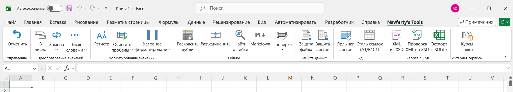
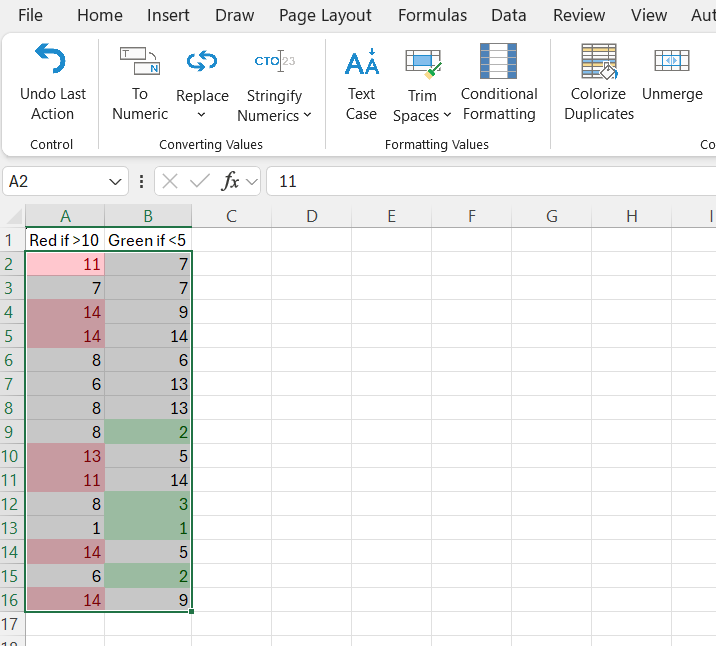
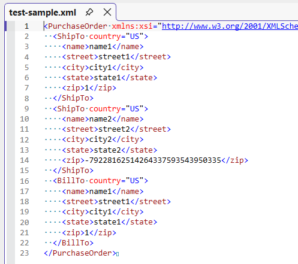
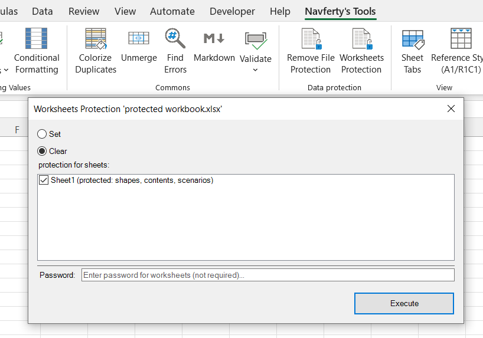

Надстройка Navferty Excel Add-In
Бесплатная надстройка для Excel: инструменты для обработки данных, форматирования и валидации.
- Бесплатно
- Открытый код (MIT)
- Для настольного Excel в Windows

Статьи о повседневных проблемах в Excel
Большинство статей начинается с проблемы и показывает, как решить её встроенными средствами. Надстройка упоминается там, где она экономит несколько кликов.
Как найти все ошибки в Excel (#ЗНАЧ!, #ССЫЛКА!, #ДЕЛ/0!)Способы найти все ошибки в формулах на листе и что означает каждая из них.
Преобразование чисел-как-текст в числаПочему числа в Excel становятся текстом и несколько способов вернуть им числовой тип.
Как убрать лишние пробелы в ExcelСЖПРОБЕЛЫ, неразрывные пробелы и переносы строк: как правильно очистить текстовые ячейки.
Подсветка дубликатов в Excel без формулУсловное форматирование, удаление дубликатов и что делать, если нужно видеть, какие строки совпадают.
ВПР (VLOOKUP) в Excel: синтаксис, примеры и частые ошибкиСинтаксис, пример с двумя листами, типичные причины #Н/Д и альтернативы: ПРОСМОТРX и ИНДЕКС/ПОИСКПОЗ.
Горячие клавиши Excel, которые экономят больше всего времениСочетания клавиш для редактирования, перемещения, выделения, заполнения и вставки, сгруппированные по задачам.
Команды
Всё, что есть на вкладке Navferty's Tools. Откройте команду, чтобы увидеть, что она делает, на скриншотах «до» и «после».
Очистка текста и чисел



Условное форматированиеРаспространяет условное форматирование на всю таблицу по образцу первой строки.Буквы и форматы чисел

Поиск проблем в данных


Экспорт, XML и защита



Создать образец XML по XSDСоздаёт образец XML по XSD-схеме. Валидация XML по XSDПроверяет XML по XSD и выводит ошибки на лист.
Валидация XML по XSDПроверяет XML по XSD и выводит ошибки на лист.
 Снять защиту с книгиСнимает защиту с листов, структуры книги и VBA-проектов.
Снять защиту с книгиСнимает защиту с листов, структуры книги и VBA-проектов.

Защита листовУстанавливает или снимает защиту сразу с нескольких листов.Прочие инструменты
Установка
1
Скачайте и разархивируйте архив с установщиком
Получите последнюю версию с нашего сервера:
Скачать setup.zip2
Запустите установку
Дважды щёлкните по загруженному файлу setup.exe и следуйте инструкциям мастера установки.
3
Перезапустите Excel
Если Excel был открыт во время установки, перезапустите его. Вы увидите новую вкладку Navferty's Tools на ленте.